Front Page Video


I love an old time country throwdown. I've put this project together for those who do, too. Anyone who visits this page can discover individuals that're live and active in traditions of old time music and dance today.